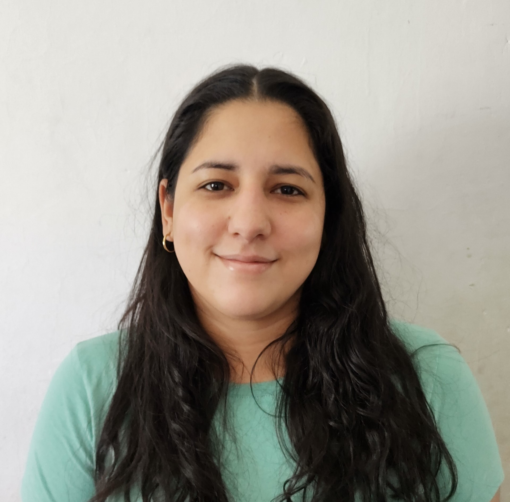

Nombre y Apellido : Melina Pilar Carraro
Carrera : Licenciatura en gestión de tecnologia de la información
Curso : 465129
Proyecto :
Sitio Profesional : iRescue
Descripción :
Servicio técnico especializado en la reparación de tablets, celulares y computadoras
Sitio : https://meellcarraro.github.io/iRescue_SitioProfesional/
Repositorio : https://github.com/Meellcarraro/iRescue_SitioProfesional